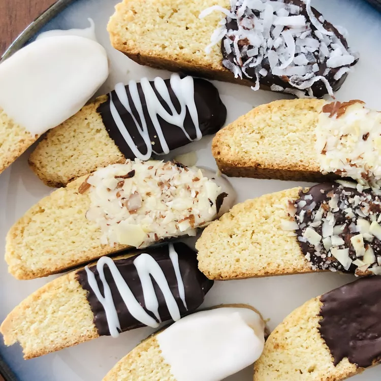

Biscotti

Description
These biscotti are easy, quick, and my favorite Italian cookies. My friend at work gave me this simple, no-frills recipe.
Ingredients
- 1 cup white sugar
- ½ cup vegetable oil
- 3 eggs
- 1 tablespoon anise extract, or 3 drops anise oil
- 3 ¼ cups all-purpose flour
- 1 tablespoon baking powder
Steps
- Preheat the oven to 375 degrees F (190 degrees C). Grease two cookie sheets or line with parchment paper.
- Beat together sugar, oil, eggs, and anise extract in a medium bowl until well-blended. Combine flour and baking powder in a separate bowl; stir into egg mixture to form a heavy dough.
- Divide dough into two equal pieces. Form each piece into a log the length of a cookie sheet. Place one log on each of the prepared sheets; and press dough down to 1/2-inch thickness.
- Bake in the preheated oven until golden brown, 25 to 30 minutes. Transfer logs to wire racks; let sit until cool enough to handle, about 15 minutes.
- Slice each log crosswise into about eighteen 1/2-inch-thick slices. Place slices cut-sides up back on the cookie sheets.
- Bake until lightly toasted and golden brown, 6 to 10 minutes per side.